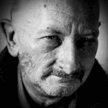

Антон
Антон (англ. Anton) — один из двенадцати играбельных персонажей игры This War of
Mine.

-
Описание
- Пожилой математик, скорей всего, окажется не так востребован в тяжелых условиях выживания, как повар, добытчик или тот, кто умеет хорошо торговаться. Бегает медленнее других. Но он поможет при изготовлении лекарств и мелкой работой днем. Плохо охраняет убежище, велик шанс получить ранение, если его поставить на охрану. Морально устойчив, спокойно реагирует на убийство и воровство.
-
Автобиография
- "Я слишком часто натыкался на невероятных жлобов или откровенных преступников. Но я чувствую, что вы другие! А для ученого с багажом знаний, компания людей с подходящими мыслительными навыками, была бы крайне приятна. К тому же.. да, к черту, я не могу больше притворяться! Я просто старый пердун, который не знает ничего. Я так благодарен за вашу компанию. Я слишком долго был в одиночестве. Слишком долго."
-
Можно мне остаться с вами?
- "Добрый день, меня зовут Антон. Видите ли, я уже не так молод, и честно говоря, я не думаю, что смогу выжить на войне в одиночку. Не будете ли вы так добры, и не разрешите ли мне пожить с вами? Обещаю, я буду работать, чтобы окупить своё проживание!"
-
Истории
- "Я так рад быть здесь. Прошу прощения за свою исповедь. Но эта война тяжким бременем отпечаталась на моей душе. Люди, которые... которые были мне очень дороги, велели мне остаться в живых любой ценой. А поскольку я обязан им жизнью, я не могу ей разбрасываться."
- "Я был фактически точен, когда говорил о своём учёном статусе. Как-то раз меня номинировали на Филдсовскую премию - это как Нобелевская среди математиков. Я...Я преподавал, и мне это очень нравилось. Частично это стало причиной потрясения, которое на меня оказала война. Много месяцев я оберегал своих лучших студентов, но в конце концов их убили у меня на глазах."
- "После того как кампус был разрушен, я прятался со своими студентами в заброшенных домах на набережной. Какое-то время нам удавалось там выжить, охотясь на крыс. Мы пробили проходы в стенах подвалов, чтобы безопасно перемещаться из дома в дом, поскольку обстрелы и снайперский огонь не прекращались. Но сырая тьма и постоянный страх быть похороненным заживо свел некоторые блестящие умы в безумие."
-
Особенности
- Хороший математик – Предположительно: Быстрее ловит крыс при помощи ловушек. Тратит меньше ресурсов при изготовлении лекарств. Снижает количество использованных в убежище боеприпасов. Потребляет мало еды,низкое потребление пищи - статус "голоден" держится два дня.
- Рюкзак – 8 слотов.
- Охрана убежища – Плохо.
- Зависимость – Нет. Не имеет вредных привычек. Трезвенник – Нельзя вывести из депрессии с помощью алкоголя.
- Гитара – Не умеет играет на гитаре.
- Мораль – Неразборчив в средствах, готов закрыть глаза на большинство морально сомнительных действий, таких как кража и убийство. Устойчивый к депрессии.